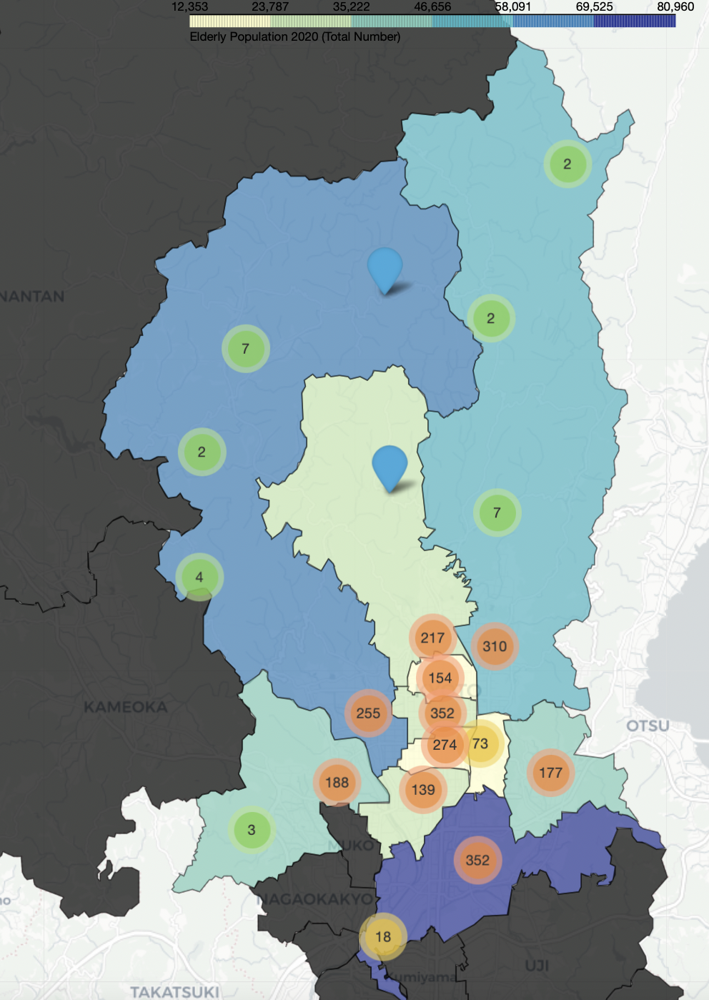
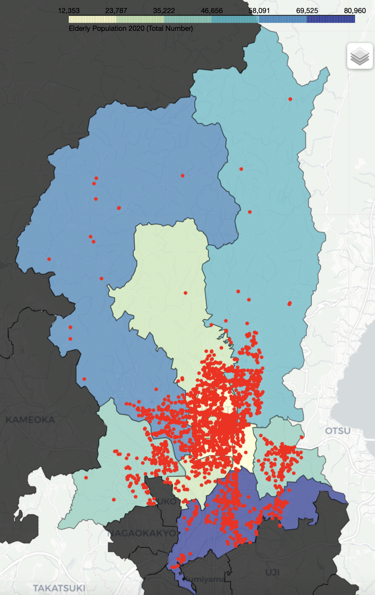
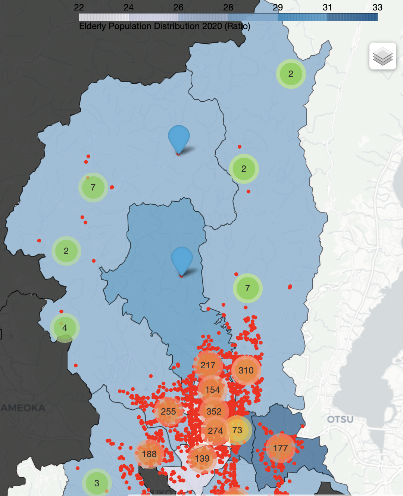
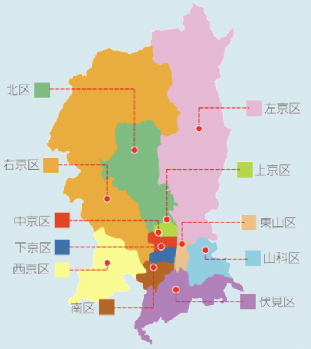

Healthcare Facilities Clusters
This map shows the distribution of healtcare facilities in Kyoto City using dynamic markers clusters.

Healthcare Facilities Spots
This map shows the distribution of healtcare facilities in Kyoto City using spot markers.

All in One
This map combined all previous information. You can control which information to be displayed

Hospitals Location Search
This map allows you to search the different hospitals in each ward inside Kyoto City.